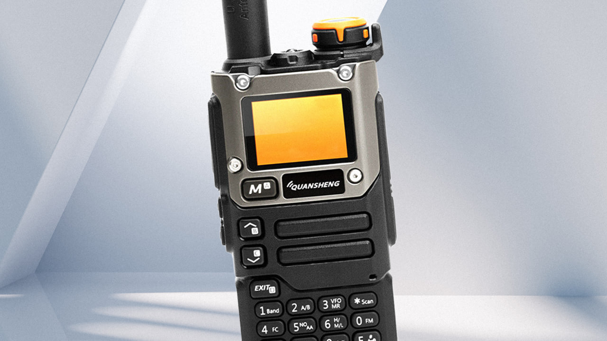
Дядюшка Ляо не перестаёт удивлять. Мы хорошо помним, какую революцию совершили USB-донглы на микросхемах Elonics E4000 и Rafael Micro R820T, изначально предназначенные для просмотра телевидения на экране компьютера. С заменённым драйвером они превращались в универсальный SDR-радиоприёмник, принимавший в диапазоне от 25 MHz до 1 750 MHz, отображая при этом спектр шириной 2.4 MHz. И стоило это удовольствие долларов 5, может, чуть больше.
Вторым важным событием стало появление дешёвой народной «шарманки» — Baofeng UV-5R. Это простенький двухдиапазонный трансивер с заявленной выходной мощностью 5W и ценой в $25. Но недавно китайцы вновь превзошли сами себя и выпустили нечто, что стало ещё более интересным — Quansheng UV-K5 и улучшенные версии, обозначаемые UV-K5(8) и UV-K6. Что это за трансивер и почему он стал так популярен — читайте под катом.
Перед началом рассказа оговоримся, что в качестве примера на всех фотографиях будет фигурировать модель Quansheng UV-K6, но каких-то кардинальных отличий от UV-K5/UV-K5 (8) вы не увидите, кроме серебристой накладки передней панели.
Внешний вид и комплектация
По своим габаритам трансивер ничем особенно не выделяется: длина — 115 мм, ширина — 60 мм, высота — 37,5 мм. Вес чуть более 230 г. Несмотря на то, что на некоторых сайтах указана влагозащита IP57, верить этому не стоит. Влагозащиты у этого трансивера нет, так что от воды его надо прятать. Под дождь мы бы тоже советовали с ним не попадать.
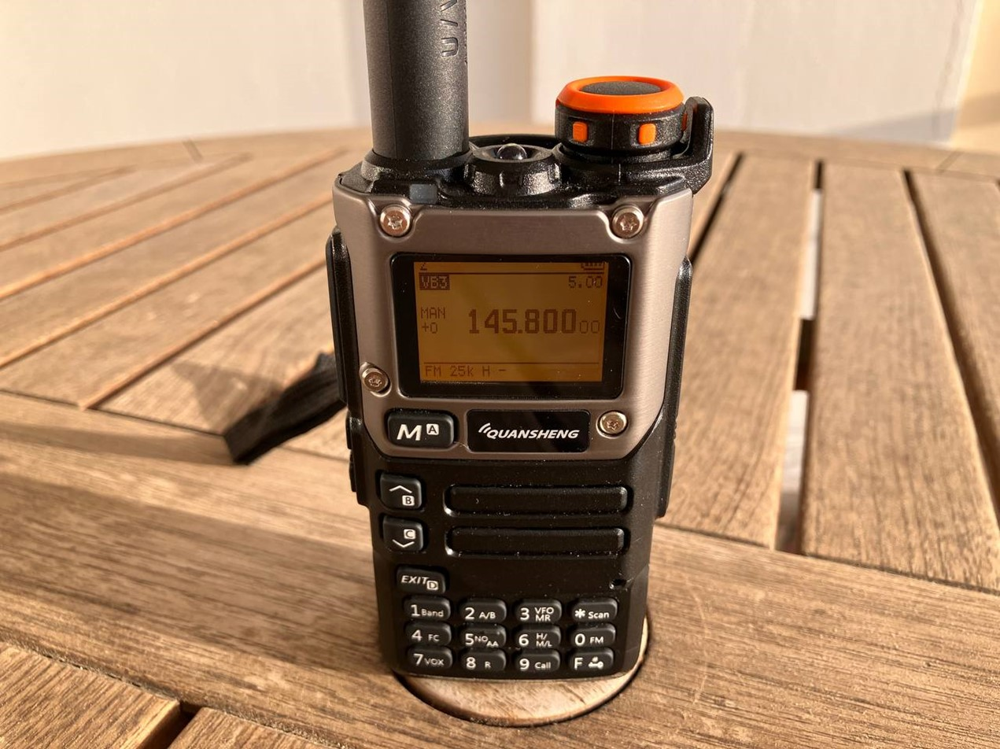
Обратите внимание, что антенный разъём у трансивера — это не привычный SMA-F, а SMA-M. Лично у меня есть много антенн, требующих SMA-F, так что пришлось обзавестись парочкой переходников. На передней панели расположены небольшой монохромный дисплей с приятной оранжевой подсветкой, клавиатура и прорези для динамика и микрофона. В верхней части — антенный разъём, LED-фонарик и крутилка громкости, одновременно отвечающая за включение и выключение трансивера:
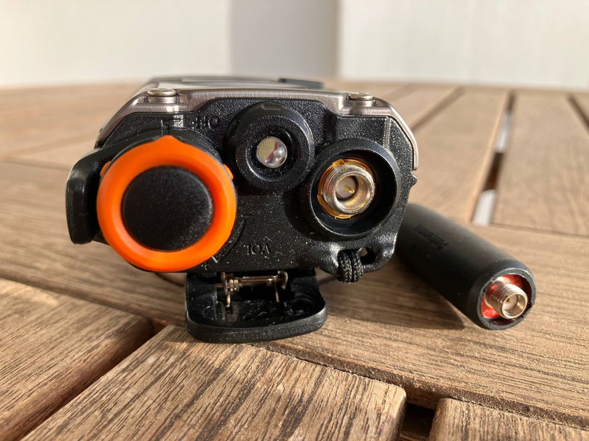
На левой грани расположены три кнопки: PTT (Push-To-Talk) и две программируемые, обозначенные одним и двумя квадратиками. Для простоты мы будем использовать римские цифры: I и II.
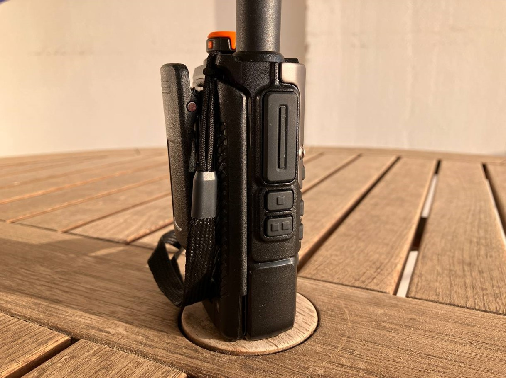
На правой грани спрятан разъём для подключения гарнитуры (тип Kenwood) или кабеля для программирования, а также USB-C-разъём, используемый исключительно для подзарядки трансивера в экстренном случае. Штатно всё равно рекомендуется заряжать при помощи зарядного стакана, идущего в комплекте.
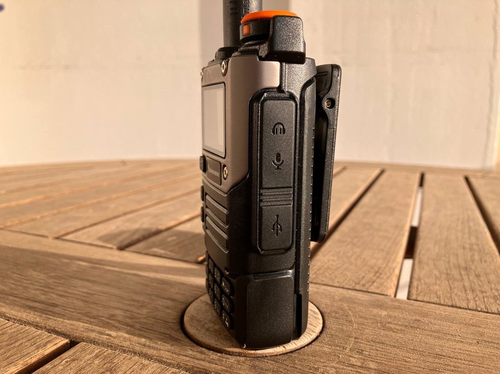
Вместе с трансивером в коробке вы найдёте штатную антенну-резинку, простенькую гарнитуру на одно ухо, ремешок, USB-C-кабель, прищепку для ношения на поясе и коротенькую инструкцию. За отдельные пару долларов в комплект закинут кабель для программирования, который одинаков для устройств Quansheng и Baofeng.
Что внутри
Официально сей трансивер относится к категории Walkie Talkie. Это значит, что его можно использовать для работы в 2 м (144-148 MHz) и 70 см (420-450 MHz). Максимальная мощность — 5W. Обзавестись таким можно всего за 1 500-2 000 рублей.
Обратите внимание, что в разных странах нижняя граница 70 см диапазона может отличаться. Так, например, в РФ радиолюбителям разрешено использовать не весь диапазон, а лишь его часть — 430-440 MHz (при этом запрещена работа радиолюбительской службы на частотах 430-433 MHz в зоне радиусом 350 км от центра г. Москвы). Этот же диапазон в США полностью отдан радиолюбителям.
Baofeng UV-5R был феноменально простым и дешёвым, поскольку в его основе лежал однокристальный трансивер AT1846S. Разумеется, что качество такого трансивера оставляло желать лучшего, но за такую стоимость ему это было простительно. Quansheng также пошли по пути установки однокристального чипа, но выбрали более качественный вариант — BK4819.
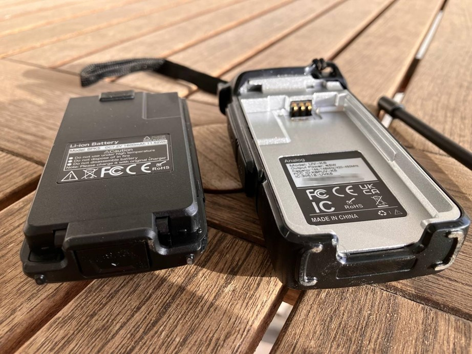
Плата трансивера крепится в силуминовое шасси, что придаёт всей конструкции жёсткости и прочности. Кстати, разбирается без единого винта. Поддеваем отвёрткой шасси — и вот они, потроха:
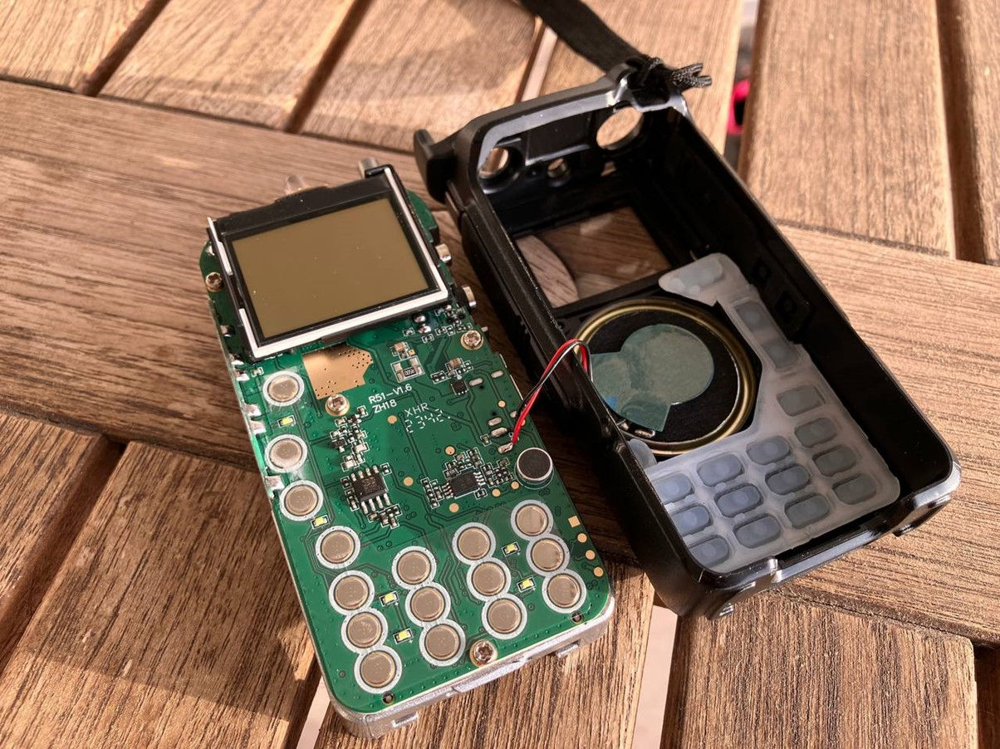
Правда учтите, что динамик напрямую припаян к плате, так что для проведения каких-либо манипуляций его приходится отпаивать и потом припаивать заново. Иногда провода динамика могут просто отвалиться, если несколько раз прогнуть их туда-сюда. Но опять же за такую стоимость вполне простительно.
Качество самого корпуса не вызывает отрицательных эмоций. Пластик отлит хорошо, швы аккуратные. Нет никакого ощущения, что держишь в руках портативку за 20 долларов.
Раскрытие
Теперь о самом «вкусном». Даже без перепрошивки станцию можно раскрыть как на приём, так и на передачу. То есть при помощи этого чуда можно слушать дальнобойщиков, авиацию, SATCOM, морскую связь и многое другое. Прямо «из коробки» оно умеет раскрываться на диапазон от 50 до 600 MHz. Более того, станция позволяет передавать на всех этих частотах:
FM: 50-76 MHz
FM: 108-135.9975 MHz
FM: 136-173.9975 MHz
FM: 174-349.9975 MHz
FM: 350-399.9975 MHz
FM: 400-469.9975 MHz
FM: 470-599.9975 MHz
AM: 108-135.9975 MHz
Выполняется раскрытие через сервисное меню. В выключенном состоянии зажмите PTT + I и поверните крутилку громкости для включения. Теперь штатное меню, вызываемое кнопкой M, будет дополнено несколькими пунктами (52-57). Пункт 54 (F-LOCK) как раз отвечает за то, чтобы трансивер мог работать и на приём, и на передачу во всех вышеуказанных промежутках частот:
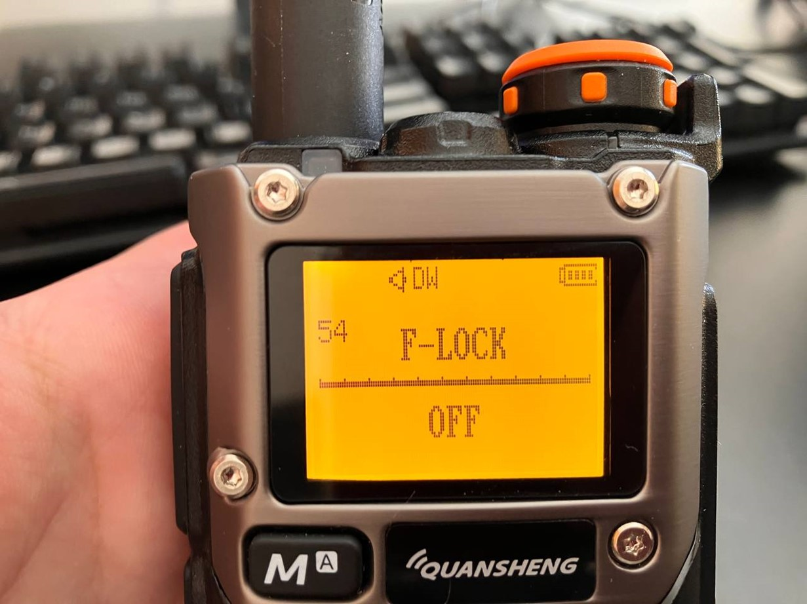
Учитывайте, что после такой операции нужно быть очень внимательным, дабы случайно не начать передавать в запрещённом для радиолюбительской службы диапазоне. Есть только одно исключение: подача сигнала SOS (Mayday) в случае реальной опасности для жизни допустима на любых частотах.
Замена прошивки
Предположим, вам диапазона 50-600 MHz мало и хочется большего. Тут без вариантов — трансивер придётся перешивать. Это простое действие позволит раскрыть его для приёма и передачи на диапазон от 18 до 1 300 MHz. Оригинальная прошивка очень легко модифицируется, так что в сети полно кастомных прошивок, как и скриптов для сборки собственной прошивки.
В качестве эталона возьмём кастомную прошивку IJV v3 от итальянского радиолюбителя Фабрицио Палумбо (Fabrizio Palumbo) с позывным IU0IJV. Даже среди кастомных прошивок она показала себя наиболее удобной. После перепрошивки появляется возможность работы не только FM/AM, но и WFM/CW/DSB. Конкретно у этой прошивки принимаемый диапазон — от 15 до 1 300 Mhz (правда, с пробелом от 620 до 840MHz).
Также в этой прошивке нет возможности передавать на CB и в авиационном диапазоне. Забегая вперёд, скажем, что в большинстве случаев это не требуется, поскольку на CB передача будет крайне плохого качества, а за передачу в авиадиапазоне можно оказаться в местах не столь отдалённых. Увы, в 60 КБ сложно уместить всё, так что из стоковой прошивки многое было убрано. В частности, опция поставить пароль, приём погодных данных WX NOAA (актуально лишь для США), информация о точном вольтаже батареи, клонирование «по воздуху» и ещё пара редко используемых опций.
Чтобы успешно перешить трансивер, потребуется кабель для программирования и
соответствующий софт.
Заранее проверьте, что батарея трансивера полностью заряжена, дабы случайно его
не окирпичить. Забавно, но существует даже
веб-сервис для перепрошивки
этого трансивера прямо из браузера. До чего техника дошла…
Порядок подготовки для считывания настроек и калибровочных данных (у каждого трансивера собственные калибровочные данные):
Втыкаем кабель для программирования в компьютер.
Включаем трансивер.
Втыкаем кабель для программирования в трансивер. Важно сделать это с усилием, свежекупленные кабели имеют особенность не втыкаться до конца.
Открываем k5prog-win и выбираем нужный COM-порт. У нас вот определился как COM-8.
Проверяем, что скорость выставлена в 38 400.
Нажимаем кнопку Read configuration и сохраняем полученный файл.
Нажимаем кнопку Read calibration и также сохраняем файл.
Можно шить. Порядок подготовки к перепрошивке:
Скачиваем прошивку (firmware_IJV_V3.zip) и распаковываем полученный архив.
Втыкаем кабель для программирования в компьютер.
У выключенного трансивера зажимаем PTT и поворачиваем крутилку громкости для включения. Загорится фонарик, а на дисплее ничего не будет отображаться. Это значит, что всё сделано правильно.
Втыкаем кабель для программирования в трансивер.
Открываем k5prog-win и выбираем нужный COM-порт.
Проверяем, что скорость выставлена в 38 400.
Нажимаем кнопку Write Firmware и выбираем файл firmware.IJV.V.3.14.bin (важно не перепутать с firmware.IJV.V.X3.14.bin — версия с литерой X предназначена только для аппаратно модифицированных трансиверов с заменённым чипом EEPROM-памяти). Фонарик замигает, визуализируя процесс прошивки.
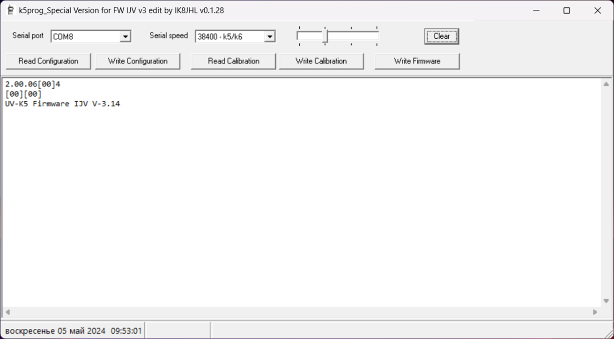
После завершения перепрошивки нужно выполнить сброс конфигурации:
Трансивер выключаем.
Кабель программирования отсоединяем.
Зажимаем PTT + I и снова включаем трансивер (будет надпись SERVICE ENABLED).
Нажимаем кнопку M.
Выбираем пункт 58 (RESET) и подтверждаем ещё раз (M).
Нажимаем кнопку вниз (высветится ALL) и ещё дважды подтверждаем (M).
Трансивер перезагрузится, новая прошивка будет готова к работе.
Программирование частот и опций
Мы не стали изобретать велосипед или приобретать отдельное ПО для программирования. Вместо этого самым разумным способом будет воспользоваться бесплатным кроссплатформенным приложением Chirp. «Из коробки» Chirp о трансивере с кастомной прошивкой ничего не знает. На этот случай в архиве с прошивкой лежит специальный модуль, позволяющий это исправить. Открываем меню Файл → Загрузить модуль…
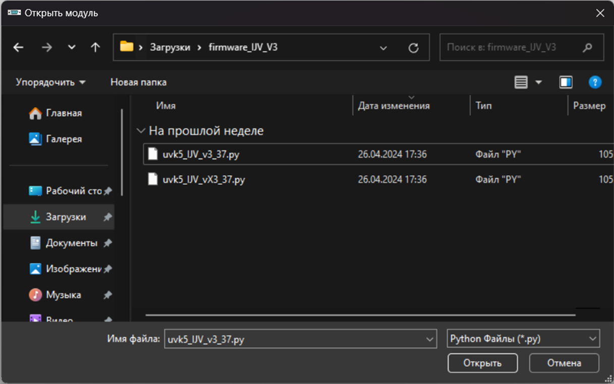
Выбираем uvk5_IJV_v3_37.py и нажимаем Открыть. Система предупредит, дескать действуете на ваш страх и риск. Соглашаемся, затем открываем меню Станция → Загрузить из станции…:
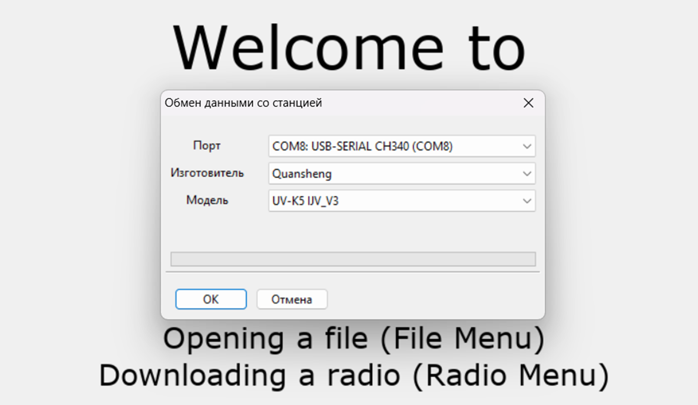
Нажимаем OK — и теперь у нас появляется возможность редактирования любых опций и частот непосредственно на компьютере.

После того как частоты и параметры отредактированы, можно сохранить образ в файл и залить его в трансивер (Станция → Отправка на станцию…):
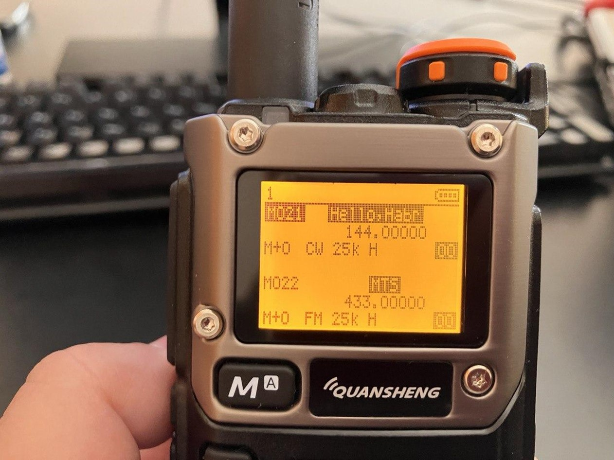
Заключение
Quansheng UV-K5/6 — отличный пример того, насколько простым и кастомизируемым можно сделать современный трансивер. Да, по качеству это ни разу не профессиональная станция, но для энтузиастов — отличная платформа. Кто-то делает на базе этой станции прошивку, позволяющую обмениваться текстовыми сообщениями по радиоканалу. Кто-то превращает UV-K5/6 в анализатор спектра (правда, с определёнными ограничениями), а есть и умельцы, которые добавляют функцию радиоключа от ворот (привет, Flipper Zero).
Такой трансивер хорош тем, что он доступен практически каждому (это вам не Icom c Yaesu, которые стоят весьма ощутимых денег). Вместе с этим вы можете вполне устроить для себя челлендж и попробовать разработать какую-нибудь уникальную прошивку, вместив её всего лишь в 60 КБ доступного дискового пространства.
Как вам такой аппарат? Ждём вас в комментариях.